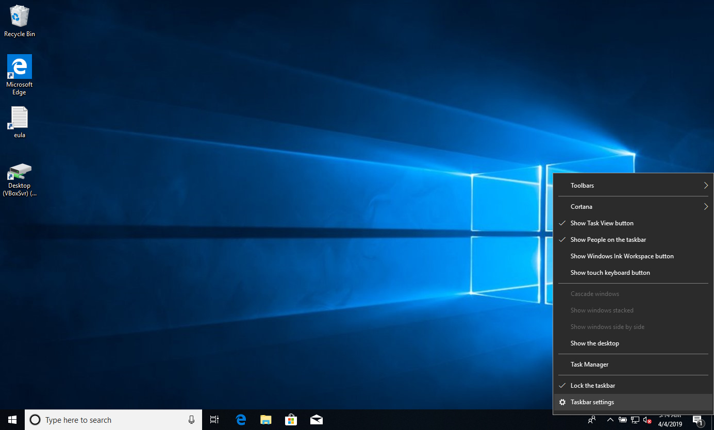
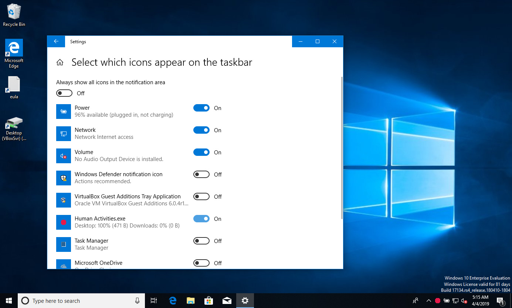

Instructions for Windows
You can use the app on Windows 7, 8 or 10. The following instructions relate to computers with the Windows 10 operating system.

Creating new archive folders
Before you install the Human Activities app on your computer, you need to deactivate the folders preconfigured by the system. This includes Documents, Music, Pictures and Videos. You should replace them with the folders: Paid Work, Unpaid Work, Recreation and Others. There, you can store data based on given activities. The Others folder is meant for activities like free time, procrastination or lazing around.
- You will find the Documents, Music, Pictures and Videos folders in the File Explorer panel. You can open it by clicking on the icon of the same name in the Taskbar of the operating program at the bottom of the screen. In the menu that appears, mark the aforementioned folders and right-click each folder and click on Remove from Shortcuts.
- Then on the operating system desktop create folders for Paid Work, Unpaid Work, Recreation and Others.
- Select the newly-created folders by right-clicking and in the menu enter the command for Add to Shortcuts.
How to configure data archiving
In order to install the Human Activities program on your computer, you will need to go through the following steps.
- Click on the Download icon and download the Human Activities program to the Downloaded files folder. Right-click on the application icon and enter the Create Shortcut to Start command.
- Run the Human Activities program from the Start which can be found in the Taskbar in the left corner of the screen.
- In order for the program to launch automatically each time you start the computer, you need to go through the following steps. Press the keys WIN and R. In the window that pops up, write the command: shell:startup and click OK. Then move the Human Activities.exe program to the window that opens up.

- In the Taskbar on the monitor, click on the arrow icon (Show hidden icons) and enter the Taskbar Settings command. In the open window check Select which icons appear on the taskbar and switch to On in the Human Activities.exe application.
- The following steps will enable you to monitor data in the newly-created folders. Once again, click on the arrow icon (Show hidden icons) and right-click on the Human Activities program icon. Enter the Configurations command. In the window that then pops up, you will select the folders that you want the Human Activities program to monitor, i.e. Paid Work, Unpaid Work, Recreation and Others.
- Afterwards, restart your computer.
- The most entertaining part of the configuration then follows - the process of moving data to the newly-named items. This step is not configured automatically; the user must sort it out him-/herself. It is the most difficult part of the entire process, but the results are worth it.
Data Monitoring
Part of the application includes a simple, statistical overview in the form of graphic icons on the operating system's control panel. After you click on the overview, an entire list of all items and their usage (expressed as percentages) will appear. In the basic configuration of the Human Activities program, the data stored on your hard drive is recalculated every 4 hours. The sum is calculated based on ratios of size to the amount of information in the given folder and the time spent interacting with the data.
Uninstalling the program
Deleting the application is very simple.
- Display Open hidden icons and click on End.
- Then open Downloaded files, select the Human Activities folder and right-click and enter Delete.
- Complete the deletion process by emptying the Trash folder.